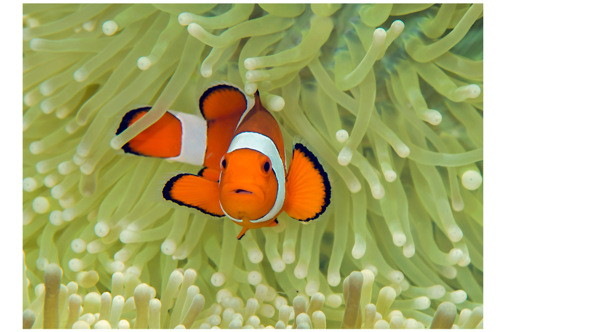
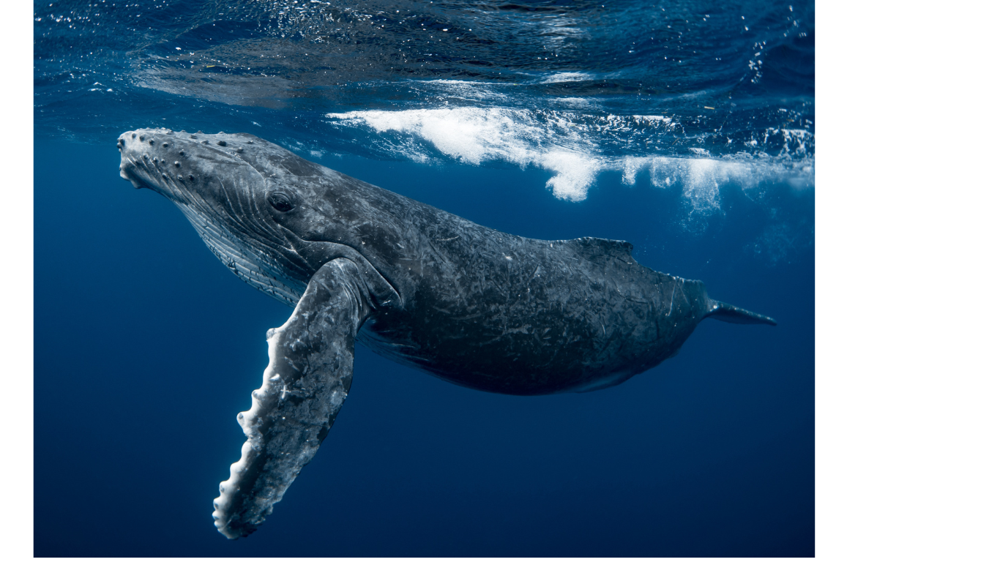
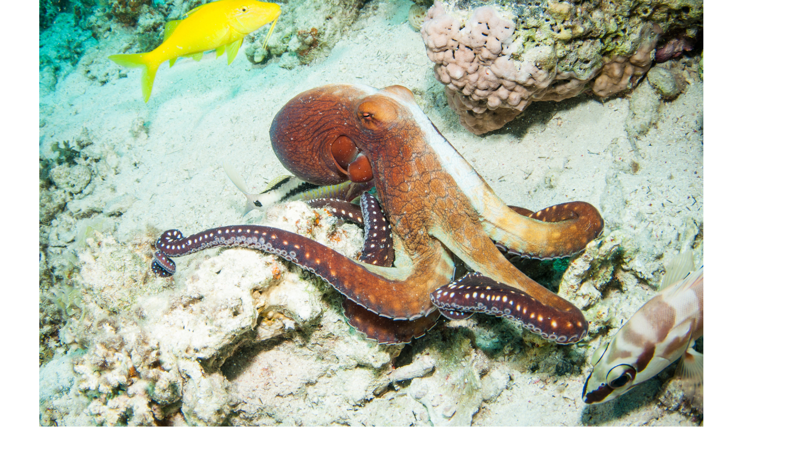

أنواع الحياة البحرية
| صورة | اسم الكائن البحري | وصف | البيئة | النظام الغذائي | سلوكه |
|---|---|---|---|---|---|
|  | سمك المهرج | يعيش بين شعاب الأكتينيا ويتميز بألوانه الزاهية. | شاطئية | أعشاب وحيد | سلمي |
|  | الحوت الأزرق | أكبر مخلوق حي على سطح الأرض.. | أعماق | مفترس (بلانكتون) | هادئ |
|  | الأخطبوط | كائن ذكي يعيش في أعماق المحيطات، يتميّز بثمانية أذرع مرنة وقدرته المدهشة على التمويه وتغيير لونه وشكله للهروب من الأعداء | قاع البحر | مفترس | سلمي |
قائمة المفضلات لدى الباحثين
رابط مفيد
https://www.wmu.se/